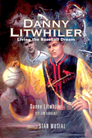

<body bgcolor="#FFFFFF" text="#000000" link="#0000FF" vlink="#CC0000" alink="#CC0000"><center><hr width="350" size="1" align="center" noshade>The fascinating career of a major league baseball player, manager, coach, goodwill ambassador, and inventor<hr width="350" size="1" align="center" noshade><p><a href="https://cdcshoppingcart.uchicago.edu/Cart/ChicagoBook.aspx?ISBN=9781592135240&&PRESS=temple" target="_top">Buy this book!</a> | <a href="https://cdcshoppingcart.uchicago.edu/Cart/Cart.aspx?PRESS=temple" target="_top">View Cart</a> | <a href="https://cdcshoppingcart.uchicago.edu/Cart/Cart.aspx?PRESS=temple" target="_top">Check Out</a></p><p></p></center><!--none//--><h1>Danny Litwhiler</h1>
<H2>Living the Baseball Dream</H2>
<H2><!-- Foreword by Stan Musial --></H2>
<h3>Danny Litwhiler with Jim Sargent, foreword by Stan Musial</h3>
<P>cloth 1-59213-524-2 $47.00, Sep 06, <FONT COLOR=#990033>Out of Print</FONT>
<BR> 312 pp
6x9
2&nbsp;tables 13&nbsp;halftones
</P><BLOCKQUOTE><I>"Coach Litwhiler was very instrumental in the decision to play baseball my junior year at Michigan State. His persistence in getting me to play and his compassion through some down times were invaluable to me as I developed as a player and as a person that first year. Without his guidance I wouldn't have been able to experience some of the best moments in baseball history. Reading </i>Danny Litwhiler<i> provided me with some wonderful memories of Coach Litwhiler."</i>
<br>&#151;<b>Kirk Gibson</b>, 1988 National League MVP<i></I></BLOCKQUOTE>
<p>Danny Litwhiler has "lived the dream" of a life in baseball. After growing up and learning to play ball in Ringtown, Pa., he enjoyed an eleven-and-a-half-year career in the major leagues, during which he had the opportunity to play for his favorite team, the Philadelphia Phillies, and to play in two World Series. In 1942, he set a record for 151 consecutive errorless games as an outfielder-rather ironic since he led the league in errors (15) the year before!
<p>After his career in the majors, Litwhiler coached college baseball for almost thirty years, and over 100 of his players, including Steve Garvey, Dick Howser, and Kirk Gibson, later signed professional contracts. But Danny Litwhiler was even more than a player and coach. He invented many devices used in the game today, such as the Jugs radar gun, which measures the velocity of pitches. And he was a goodwill ambassador for baseball&#151;promoting it internationally, from Central and South America to Europe and Japan.
<p>Throughout his life, Litwhiler has passed on to others his knowledge and enthusiasm for baseball. His engaging memoir conveys his passion for the game as he fondly recalls playing with legends like Jackie Robinson and Enos Slaughter, teaching future major leaguers, and his tireless promotion of the game wherever he went. He has truly lived a baseball life.
<BR>&nbsp;<h2>Reviews</h2>
<p><i>"I consider myself fortunate to have played for Coach Litwhiler&#151;he is the reason I went to Florida State University. His dedication and knowledge of the game of baseball are apparent in this book, and he has been a positive influence on countless college and major league players."</i>
<br>&#151;<b>Woody Woodward</b>, former Major League Baseball player, and Florida State University Head Coach
<p><i>"Easy reading, extremely informative, and a 'can't put down' book. I have always considered myself the luckiest athlete to have ever attended Michigan State. Reading </i>Danny Litwhiler<i>, I found out so much that I never knew about Coach Litwhiler's career, his family life, and more. To receive the honor of being coached by two legendary coaches&#151;Danny Litwhiler and Duffy Daugherty&#151;not many athletes are afforded this privilege. After completing Coach Lit's book, I will now, forever, spell baseball D-A-N-N-Y L-I-T-W-H-I-L-E-R."</i>
<br>&#151;<b>Brad Van Pelt</b>, Michigan State University, '71-'73
<p><i>"The book is filled with numerous stories of his involvement in baseball over the years and should be required reading for every coach and player in the game because of these amazing amount of material that it covers. It is one of those books you just can't put down."</i>
<br>&#151;<b><i>Collegiate Baseball</i></b>
<BR>&nbsp;<h2>Contents</h2><P>
<p>Foreword &#150; Stan Musial
<br>Note on the Cover Illustration by Buck Paulson
<br>Acknowledgments
<br>1. Living the Baseball Dream: From Ringtown to the World Series
<br>2. The Ringtown Years: 1916-1940
<br>3. The Philadelphia Phillies Years: 1940-1943
<br>4. The National League Baseball Parks in the 1940s
<br>5. The St. Louis Cardinals Years: 1943-1946
<br>6. The Boston Braves Years: 1946-1948
<br><i>Photographs</i>
<br>7. The Cincinnati Reds Years: 1948-1951
<br>8. The Minor League Manager-Player Years: 1952-1954
<br>9. The Florida State University Years: 1954-1963
<br>10. The Michigan State University Years: 1963-1983
<br>11. Cincinnati Reds Minor League Hitting Instructor and Consultant: 1983-1988
<br>12. The International Years: 1946-1984
<br>Index
</P><BR>&nbsp;<H2>About the Author(s)</H2>
<table><tr><td valign="top"><img src="/tempress/authors/1862_au1.gif" height="90" width="75"></td><td width="100%" valign="middle"><p><b>Danny Litwhiler</b> is a former major league baseball player whose eleven-and-a-half-year career during the 1940s and 1950s included stints with the Philadelphia Phillies, St. Louis Cardinals, Boston Braves, and Cincinnati Reds. He played in two World Series with the St. Louis Cardinals, winning the World Championship in 1944 against the St. Louis Browns. He set a fielding record for outfielders by playing an entire season&#151;every game, every inning&#151;in 1942 without making a single error. He was also head baseball coach at Florida State University for nine years and at Michigan State University for twenty years.</P></td></tr></table><P><b>Jim Sargent</b> is a History Professor and Dean of the Social Science Division, Virginia Western Community College.</P>
<BR><H2>Subject Categories</H2>
<p><A HREF="/tempress/biography.html" TARGET="_top">Biography/Memoir/Autobiography</a>
<BR><A HREF="/tempress/sports.html" TARGET="_top">Sports</a>
<BR><A HREF="/tempress/philly.html" TARGET="_top">Philadelphia Region</a>
</p>
<BR><h2 class="inpageheading">In the series</H2>
<P><I><a href="http://www.temple.edu/tempress/baseball.html" onMouseOver="window.status='Click for other books in this series!'; return true;" onMouseOut="window.status=''; return true;" target="_top">Baseball in America</a></i>, edited by Rich Westcott.
</p>
<p align="center"><a href="https://cdcshoppingcart.uchicago.edu/Cart/ChicagoBook.aspx?ISBN=9781592135240&&PRESS=temple" target="_top">Buy this book!</a> | <a href="https://cdcshoppingcart.uchicago.edu/Cart/Cart.aspx?PRESS=temple" target="_top">View Cart</a> | <a href="https://cdcshoppingcart.uchicago.edu/Cart/Cart.aspx?PRESS=temple" target="_top">Check Out</a></p><p><font face="Arial" size="1"><a href="copyright.html" onMouseOver="window.status='Web Copyright Policy';return true;" onMouseOut="window.status=''" title="Web Copyright Policy">&copy;</a> 2015 <a href="http://www.temple.edu" target="new" onMouseOver="window.status='Link to Temple University home page';return true;" onMouseOut="window.status=''" title="Link to Temple University home page">Temple University</a>. All Rights Reserved. http://www.temple.edu/tempress/titles/1862_reg.html</font></p>